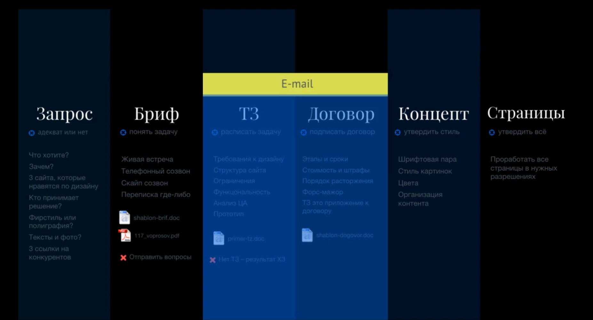

Мой Справочник | WEB-DESIGN | Этапы
Основные этапы:
- Концепции у клиента (погружение)
-
Заполнение БРИФА заказчиком (даст понимание на следующие позиции)
- Целевая аудитория (ЦА)
- Цель создания сайта, какие задачи он должен решать для заказчика
- Конкурентные преимущества
- Конкуренты (как-то выделить среди них)
- Какие блоки заказчик бы хотел видеть на главном экране (что прям сильно важно для него)
- Контактная информация и т. д.
- Изучение рынка, тенденций, конкурентов
- Что нужно пользователю? - Что нужно заказчику? - Какое решение выбрать? (чтобы всем угодить)
- ЭМОЦИИ: Какие эмоции должен вызывать дизайн?
- легкие-спокойные
- официальные-строгие
- вызывающие-шокирующие
- легкомысленнные-ненавязчивые
- ЦВЕТА:
- фирменные
- монохром (оттенки серого)
- мягкие-пастельные (примешивание белого цвета)
- яркие
- кислотные (перенасыщенные)
- ИЗОБРАЖЕНИЯ:
- абстракции
- люди
- животные, растения
- техника, товар
- пейзажи, архитектура
- ТИПОГРАФИКА
- ИКОНКИ
- Описать и выбрать КОНЦЕПЦИЮ дизайна словами (какой дизайн-концепт, какие цвета, какие иллюстрации, какой шрифт, референсы, какие эмоции он должен передавать)
- ДОГОВОР, согласование оплаты, сроков, закрытия этапов и т.д. (вся бюрократия)
- ТЕХНИЧЕСКОЕ ЗАДАНИЕ - документально составленная информация о проекте, прикрепляется к договору, включает Project Timeline. По сути это задокументированная и проанализированная информация со всего 1 этапа, от которой можно отталкиваться в процессе работы над проектом.
- Выбор технологий, инструментов, подбор команды
- В каком формате будет общение с заказчиком, по какому каналу связи и в какое время, в каком формате будет представлен дизайн заказчику (PSD, Figma)
-
Заполнение БРИФА заказчиком (даст понимание на следующие позиции)
-
ПРОЕКТИРОВАНИЕ (UX) - Прототип сайта/приложения (варфрейм, эскиз)
- Иерархия страниц, карта сайта или приложения
- Основные блоки, структура страниц (изображения, иконки, колонки, текст, кнопки, ссылки)
- UX, какая будет интерактивность, какие события будут происходить (поп-апы, формы)
- Если проект большой и перспективный, то можно предусмотреть версионность, жизненный цикл, стратегию развития
- Копирайтинг, копирайт-лист (ключевые тексты, лозунги, заголовки, тексты) - если он есть, если нет то вставлять типографическую "рыбу"
-
ДИЗАЙН:
I фаза:- Moood-board: Изображения (стоковые или фотосет) и Цвет (цветовая схема, выбор акцентного цвета).
- Типографика (выбор шрифтовых пар и основных начертаний)
- UI (UI-kit, иконки)
II фаза: Дизайн главного экрана (верхнего блока)
Этот блок будет задавать к онцепцию, которую будут отражать остальные блоки, поэтому он так важен
III фаза: Дизайн-макет целиком + презентация (готовые дизайн-макеты в .psd или Figma);
Разработка дизайна логотипа и фирменного стиля также может быть включена.
-
ПРОГРАММИРОВАНИЕ
- Вёрстка сайта + Front-end-программирование (выбор фреймворка, библиотек, технологий, сборщик)
- Back-end-программирование (Язык программирования, БД, Framework, CMS и самописный, хостинг, доменное имя, SSL)
Вспомогательные / дополнительные этапы:
- Тестирование (beta-testing, валидация, скорость загрузки, размеры файлов)
- Оптимизация (исправление ошибок, сжатие файлов)
- Доработки (о чём-то забыли, что-то нужно доделать или исправить, при этом может составляться доп. соглашения)
- Наполнение (если клиент сам не может)
- Продвижение (SEO)
- Поддержка (post-production)
Project-manager должен контролировать все этапы работы
Разговор с заказчиком - метод шести вопросов:
Бриф - хороший способ понять и решить проблему заказчика. По сути это анкета, в которой заказчик отвечает на ваши вопросы.
Личная-встреча, онлайн-собеседование, переписка
- Что? Кто? (клиенты, продукт, ...)
- Сколько? (лет, цена, мест, ...)
- Где?
- Когда?
- Зачем? (именно к вам)
- Как? (процессы, фукционал, самый важный вопрос)
Привлечение клиентов
- Можно что-нибудь подарить
- Конкретика о происхождении продукта, сертификация продукта
- Приладывайте доказательства (отзывы, мнения, статьи)
- Избегать потерь вместо рекламы приобретений ???
- Подгоняйте пользователя, но честно (осталось товаров, до конца акции...)
- Дефицит вместо изобилия. Когда чего-либо мало, мы ценим это больше (количество билетов на вебинар, количество клиентов, которых можно обслужить за месяц, количество продуктов, которые можно произвести за определённый промежуток времени.
- Благодарность вместо констатации факта (можно оставить ссылки для обратной связи после покупки товара)
- Выделить свою аудиторию
User Story (коридорные тексты) & User Logic